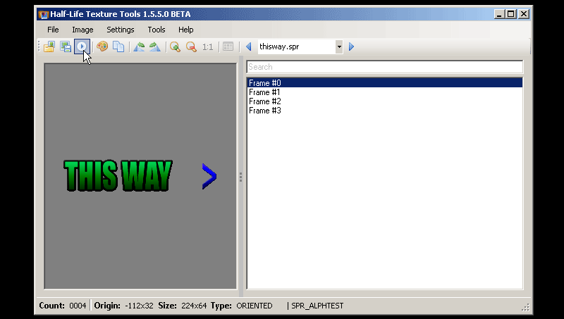
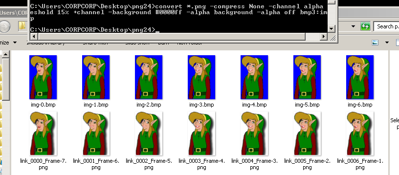

GoldSrc Sprite Tutorial
PART5: Animated Sprites
Animated sprites are the trickiest to make due to one major technical requirement: An identical shared palette across all frames. This also can be an issue if you generate the palette wrong, for example: an animation with a palette generated from only the first frame will miss colors that show up on a later frame, and vice versa. For this we require a rigid & averaged color palette.
One thing to note is that Indexalpha types CAN be batch processed easily unlike other types due to a greyscale palette. You can batch process frames in IRFANFIEW quickly like this example settings and send directly to HL-Tools.
{kind=link}
I will present three methods (1.few frames in photoshop, 2.many frame sequence, 3. many frame masked sequence.) depending on what is needed, so please review all before choosing.
Method 1: Few frames masked within photoshop
1) Using the same masking/threshold methods as in Part 4, we set up our animation layers/masks and create a timeline. This can be done by opening the "timeline" menu and creating frames.
On your first frame, hide your other layers and then add a new frame. On that second frame hide the one part and reveal another. Repeat until you have your sequence ready. You can also build this by going "layers to frames...".
Go back to your first frame in the timeline and create a fill layer. This fill layer will be your transparent color and has to be unique.Usually id use pure blue but since my image includes blue green and red, ive decided to go with yellow RGB[255,255,0].
2)Set your frame delay to 0.09 (10fps) to preview and hit play.
3)Now its time to generate the palette, but we will be using a different way from before. Go to save for web... and then choose selective (0r any of the others modes as mentioned before) 256 colors with no transparency. The reason for this method is that this window generates the average palette across ALL frames unlike the indexed mode (which flattens all layers and only does 1 frame). Go to the top right of the palette preview and hit "save palette file". Save this out and then press cancel.
4) Now back in your working document go to indexed color, and press okay for the merge visible prompt (later we will be using history tab to go back). Go to the palette rollout and go to custom. Then go to "load palette".
5)Once this is done, ctrl-click the yellow color to remove it from the palette and then click the space in the final slot and add it there. Press OK.
5) Go to save as.. and save as a BMP 8bit. Once saved, use the history tab to go back to before you set indexed mode. Now highlight your second frame and then go to indexed color. This time you will see "Previous" which is the one you used before so hit okay and then save as BMP. Repeat this process for the remaining frames.
6) Open up half-life texture tools and go to Tools>Create new sprite... then click "add new images". Add your newly created BMPs.
In vanilla GoldSrc HL1,ect and mods there is a bug with env_sprite where animated sprites will not loop the final frame in the sequence, and a workaround is to add the final frame twice. In other mods such as Sven-Coop, this problem was fixed and is not an issue.
Go to the number 2 "Settings" tab and select "Alphatest" as your texture format. For sprite format i'm going with oriented. Click tab3 and save the sprite in your sprite directory just as before in Part1, Step4
Once saved it will prompt you to open in viewer. Clicking the background of the preview will cycle between black white and grey which is a neat preview feature for transparencies. Click the play button to preview the animation. be sure to close HL-Texture tools before opening the map editor or else it may not open in hammer due to the file being in use.

7)Open Hammer or J.A.C.K and create an env_sprite and choose your saved sprite file under "sprite name", then set the scale of the sprite under scale. After that set the render mode to "texture" and the FX amount to 255. Set your animation framerate to a maximum of 10.
While you can go higher than 10, it will drop frames in playback to match the higher speed. This is an limitation of env_sprite entity.
7)Compile the map and observe. Using these methods I am also showing off this with an indexalpha sprite. Its pretty much the same method of frames used here combined with the previous tutorials.
Method 2: Longer sequence batch process
For this method we will be exporting frames to be converted with Wally to append a set palette to all frames. This is much faster process, however you cannot control dithering with this method.
If you don't have it get Wally here.
1)Ready your frames in the timeline as usual. For this I am using an imported animation I made ready for 10fps . I imported the frames from File>Import>import video frames to layers (I used Limit To Every 3 frames so that my 30fps video source was cut to 10fps timescale). This sequence is 23 frames total. Set your frame delay to 0.09 and preview.
Remember if you have to move around frames in the timeline or add new frames/animation/adding layer styles that effects everything be sure to use "flatten frames into layers" from timeline options. When that is done then delete your old layers or else your export will export 2 sets of layers.
Go to "save for web" and select "GIF" and choose your color pallete method (I went with adaptive). As before be sure its on 256 colors with no transparency. Save out your palette file in a folder called "BMP" which we will use later. Now cancel the save for web to go back.
2)Go to File>Scripts>"Export layers to files". Choose BMP 24bit and save it in your BMP folder you created earlier.
3)Open Wally and go to View tab "Options...". Under the batch conversion tab, select the Windows Bitmap (BMP) rollout and then choose "use this palette" button, then choose your palette you saved from before. Finally check "Overwrite existing files" and press OK.
Go to file>"Batch Conversion" and fill out your BMP folder for both source and destination directory. In wildcard field put "*.bmp" and for output select Image Files and "Windows Bitmap". Press "Go" and wally will process your images and apply the palette to all images and save them as 8bit.
4)Create your sprite in HL-Tools as before but when choosing multiple files be sure to do list view & click on the name to change the sorting so your layer order is preserved. If you are doing a sprite for vanilla Half life add the last frame again as mentioned before.
Because this will be fixed angle sprite that will act like a TV screen I have chosen oriented mode.
A quick rundown of this setup I have here:
func_button:Name scibutton, target sciscream, delay before reset 5, flags:"dont move"ambient_generic:Name scibutton, wav name "scientist/scream07.wav", flags:"start silent","not toggled"
env_sprite:Name sciscream, flags "play once"
Method 3: Longer sequence masked batch process
Now as for larger numbers of frames or sequences individually using threshold on transparencies and saving out bmps is very time consuming. This can also be a problem if you have a lot of images saved from another program or have soft transparency edges. This third method uses IMAGEMAGIK.
Download IMAGEMAGIK here.
1)Ready your frames in the timeline as before. In this case I had a bunch of existing transparent images that I loaded by using load files into stack and built into a the timeline via "layers to frames option". These frames have semi-transparent drop shadows that would normally be a lot of work to remove but with this method we will threshold process them out with IMAGEMAGIK. After processing they will be brought back in to make the final palette.
Do any ajustments/edits/crops you need. Then go to file export layers to files and save as PNG24 bit. Be sure to uncheck "trim layers" or else you will get varying sizes between frames. Save these into a folder called "png24".
2) Open up your command line ( Windows key+R and then type "cmd") navigate to your folder of images and then paste (right click paste here on the cmd) these lines:
convert *.png -compress None -channel alpha -threshold 15% +channel -background #0000ff -alpha background -alpha off bmp3:img.bmp
The threshold percentage is dependent on your needs. Normally you can start with 50% but because these images had drop shadows I went with 15% which cut them down.

3)Open photoshop and go to scripts>load files into stack and choose your bmp files. Go to the timeline and go "Make Frames From Layers". Go to save for web... and then choose perceptual 256 colors with no transparency. Go to the top right of the palette preview and hit "save color table...". Save this out in your png24 folder and call it "link.act" and then press cancel.

4)Go to image mode> Indexed color, go to custom palette rollout, then load your saved link.act.
5)We will now change the index of the blue color. Ctrl-click the pure blue color to remove it from the palette and then click the space in the final slot and add the pure blue (HEX:#0000ff/RGB:0 0 255) there. Press OK.
6)Once this is done press save and overwrite link.act. Once the new palette is saved, press cancel and close photoshop (save your working document if you like).
7)Open Wally and go to View tab "Options...". Under the batch conversion tab, select the Windows Bitmap (BMP) rollout and then choose "use this palette" button, then choose your palette your link.act palette. Finally check "Overwrite existing files" and press OK.
Go to file>"Batch Conversion" and fill out your BMP folder for both source and destination directory. In wildcard field put "*.bmp" and for output select Image Files and "Windows Bitmap". Press "Go" and wally will process your images and apply the palette to all images and save them as 8bit.
7) Open up half-life texture tools and go to Tools>Create new sprite... then click "add new images". Add your processed BMPs. Since I am creating for vanilla half life and want this to loop properly for env_sprite, I am adding the last frame twice.
8)Once saved it will prompt you to open in viewer. Clicking the background of the preview will cycle between black white and grey which is a neat preview feature for transparencies. Click the play button to preview the animation. be sure to close HL-Texture tools before opening the map editor or else it may not open in hammer due to the file being in use.
9)Place your env_sprite as before in your map: